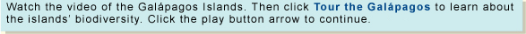

OBJECTIVE: to study the diverse animals and plants via a virtual tour of the Galápagos Islands
The Galápagos Islands, located about 966 kilometers off the coast of Ecuador, provide a natural habitat for some of the world's most unusual animals. Explore this unique environment as you take a virtual tour in this activity. When you have finished, scroll down to answer the questions below.

Answer the following questions in the boxes provided. After you complete each answer, click the Check Your Answer button for feedback.
1. Which country governs the Galápagos and where are they located?
2. Which of the Galápagos species lives both on land and in the water, is a reptile, and eats algae as its main food source?
When you have completed the questions, go to page